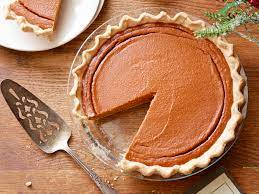

How to make yummy Pumpkin Pie!

Description
Love pumpkin pie? We all do so come learn how to make the easiest home-made pumpkin pie that'll even impress your grandma.
We make everything from scratch so we can have freshest baked pie you'll ever taste.
Don't worry, we'll hold your hand each step of the way so make sure to have all your ingredients and lets get to cookin.
Ingredients
Pumpkin
- 1 medium sugar pumpkin
- Canola oil
Easy Pie Crust
- 2 cups all purpose flour
- 1/4 teaspoon salt
- 2/3 cups cold unsalted butter
Filling
- One 14-ounce can sweetened condensed milk
- 1/2 cup whipping cream
- 2 tablespoons cornstarch
- 2 tablespoons canola oil
- 1 tablespoon ground cinnamon
- 1 teaspoon ground ginger
- 3 large eggs
Steps
- Preheat oven to 375 degrees Fahrenheit.
- Cut pumpkin in half, remove stem and seeds. Lay pieces upside down on baking sheet rimmed with alumimum foil. Rub canola oil all over pumpkin skin and bake for 1 hour, until tender.
- Make the crust
- Fold crust over the glass pie dish, make decorative and put in fridge to chill for 15 minutes.
- Line the crust with aluminim foil and bake the pie crust for 12 minutes at 350 degrees fahrenheit.
- Gather pulp from roasted pumpkin slices and puree in a food processor with condensed milk, cream, cornstarch, molasses, canola oil, cinamon, ginger, salt and eggs until smooth.
- Pour filling into the crust and bake until filling is set in the center, about 1 hour. Transfer pie to a rack and cool for 30 minutes. Serve at room temperature or chilled.